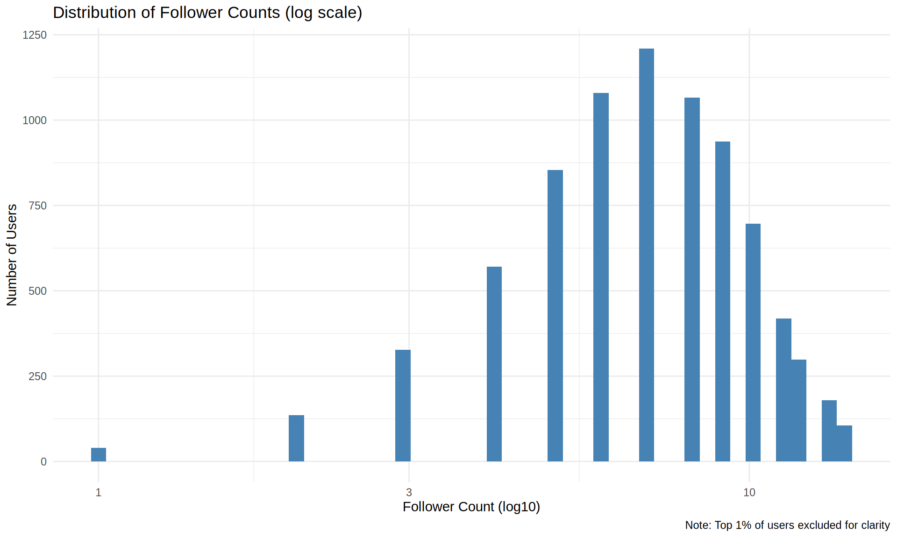

# Load required libraries
suppressPackageStartupMessages({
library(tidyverse)
library(gridExtra)
library(scales)
})
# Set theme for plots
theme_set(theme_minimal())
# Configure graphics device for output
knitr::opts_chunk$set(
echo = TRUE,
message = FALSE,
warning = FALSE,
fig.width = 10,
fig.height = 6,
error = TRUE
)
# Disable httpgd to prevent errors
options(
vsc.use_httpgd = FALSE,
vsc.plot = FALSE
)SoundCloud Network Data - Exploratory Data Analysis
Week 5 - Network Analytics
Overview
This exploratory data analysis examines the SoundCloud dataset, which contains information about users, tracks, social connections, and engagement patterns from 2019-2020, with a focus on hip-hop music. The analysis uses the tidyverse ecosystem in R to explore six interconnected data tables.
Setup and Data Loading
First, let’s load the necessary libraries and configure our environment:
Now we’ll load all the CSV files from the SoundCloud dataset:
# Load all CSV files with error handling
tryCatch({
users <- read_csv("../../../data/soundcloud/output/users.csv", show_col_types = FALSE)
tracks <- read_csv("../../../data/soundcloud/output/tracks.csv", show_col_types = FALSE)
follows <- read_csv("../../../data/soundcloud/output/follows.csv", show_col_types = FALSE)
engagements <- read_csv("../../../data/soundcloud/output/engagements.csv", show_col_types = FALSE)
streaming_events <- read_csv("../../../data/soundcloud/output/streaming_events.csv", show_col_types = FALSE)
playlists <- read_csv("../../../data/soundcloud/output/playlists.csv", show_col_types = FALSE)
cat("All datasets loaded successfully!\n")
}, error = function(e) {
cat("Error loading data files:", e$message, "\n")
cat("Please ensure the data files are in the correct location.\n")
})All datasets loaded successfully!# Print separator function for cleaner output
print_section <- function(title) {
cat("\n", paste(rep("=", 60), collapse=""), "\n")
cat(title, "\n")
cat(paste(rep("=", 60), collapse=""), "\n\n")
}Users Data Exploration
Let’s start by examining the users dataset:
print_section("USERS DATA EXPLORATION")
============================================================
USERS DATA EXPLORATION
============================================================ # Basic info
cat("Dimensions:", dim(users), "\n")Dimensions: 8000 8 cat("Column names:", paste(names(users), collapse=", "), "\n\n")Column names: user_id, username, user_type, join_date, follower_count, following_count, track_count, total_plays # Data summary
summary(users) user_id username user_type join_date
Length:8000 Length:8000 Length:8000 Min. :2019-01-01
Class :character Class :character Class :character 1st Qu.:2019-11-02
Mode :character Mode :character Mode :character Median :2020-01-16
Mean :2019-12-08
3rd Qu.:2020-02-16
Max. :2020-12-31
follower_count following_count track_count total_plays
Min. : 0.0 Min. : 0.0 Min. : 0.000 Min. : 0.0
1st Qu.: 6.0 1st Qu.: 6.0 1st Qu.: 0.000 1st Qu.: 0.0
Median : 7.0 Median : 7.0 Median : 0.000 Median : 0.0
Mean : 7.5 Mean : 7.5 Mean : 1.875 Mean : 62.5
3rd Qu.: 9.0 3rd Qu.: 9.0 3rd Qu.: 0.000 3rd Qu.: 0.0
Max. :20.0 Max. :19.0 Max. :301.000 Max. :7408.0 # Missing values
missing_vals <- users %>%
summarise_all(~sum(is.na(.))) %>%
pivot_longer(everything(), names_to = "column", values_to = "missing") %>%
filter(missing > 0)
if(nrow(missing_vals) > 0) {
knitr::kable(missing_vals, caption = "Missing values found")
} else {
cat("No missing values found in users dataset.\n")
}No missing values found in users dataset.# User statistics
users %>%
summarise(
total_users = n(),
avg_follower_count = mean(follower_count, na.rm = TRUE),
median_follower_count = median(follower_count, na.rm = TRUE),
avg_following_count = mean(following_count, na.rm = TRUE),
median_following_count = median(following_count, na.rm = TRUE),
avg_track_count = mean(track_count, na.rm = TRUE),
median_track_count = median(track_count, na.rm = TRUE)
) %>%
knitr::kable(digits = 2, caption = "User Statistics")| total_users | avg_follower_count | median_follower_count | avg_following_count | median_following_count | avg_track_count | median_track_count |
|---|---|---|---|---|---|---|
| 8000 | 7.5 | 7 | 7.5 | 7 | 1.88 | 0 |
# User type distribution
users %>%
count(user_type, sort = TRUE) %>%
knitr::kable(caption = "User Type Distribution")| user_type | n |
|---|---|
| listener | 6000 |
| creator | 1600 |
| curator | 400 |
User Follower Distribution
users %>%
filter(follower_count < quantile(follower_count, 0.99, na.rm = TRUE)) %>%
ggplot(aes(x = follower_count)) +
geom_histogram(fill = "steelblue", bins = 50) +
scale_x_log10() +
labs(title = "Distribution of Follower Counts (log scale)",
x = "Follower Count (log10)",
y = "Number of Users",
caption = "Note: Top 1% of users excluded for clarity")
Tracks Data Exploration
print_section("TRACKS DATA EXPLORATION")
============================================================
TRACKS DATA EXPLORATION
============================================================ # Basic info
cat("Dimensions:", dim(tracks), "\n")Dimensions: 15000 11 cat("Column names:", paste(names(tracks), collapse=", "), "\n\n")Column names: track_id, creator_id, title, upload_date, duration_sec, genre_primary, genre_secondary, play_count, like_count, repost_count, comment_count # Track statistics
tracks %>%
summarise(
total_tracks = n(),
avg_duration = mean(duration_sec, na.rm = TRUE),
median_duration = median(duration_sec, na.rm = TRUE),
avg_play_count = mean(play_count, na.rm = TRUE),
median_play_count = median(play_count, na.rm = TRUE),
avg_like_count = mean(like_count, na.rm = TRUE),
median_like_count = median(like_count, na.rm = TRUE)
) %>%
knitr::kable(digits = 2, caption = "Track Statistics Summary")| total_tracks | avg_duration | median_duration | avg_play_count | median_play_count | avg_like_count | median_like_count |
|---|---|---|---|---|---|---|
| 15000 | 184.62 | 180 | 33.33 | 33 | 5.99 | 6 |
# Top 10 Primary Genres
tracks %>%
count(genre_primary, sort = TRUE) %>%
head(10) %>%
knitr::kable(caption = "Top 10 Primary Genres")| genre_primary | n |
|---|---|
| Trap | 2508 |
| Alternative Hip-Hop | 2489 |
| Boom Bap | 2488 |
| Lo-Fi | 2447 |
| SoundCloud Rap | 2381 |
| Pop | 178 |
| Electropop | 171 |
| Synth Pop | 169 |
| Trance | 151 |
| Drum & Bass | 148 |
Track Playback Distribution
tracks %>%
filter(play_count > 0) %>%
ggplot(aes(x = play_count)) +
geom_histogram(fill = "coral", bins = 50) +
scale_x_log10() +
labs(title = "Distribution of Track Play Counts (log scale)",
x = "Play Count (log10)",
y = "Number of Tracks")
Genre Distribution
tracks %>%
filter(!is.na(genre_primary), genre_primary != "") %>%
count(genre_primary, sort = TRUE) %>%
head(20) %>%
ggplot(aes(x = reorder(genre_primary, n), y = n)) +
geom_col(fill = "orange") +
coord_flip() +
labs(title = "Top 20 Primary Music Genres",
x = "Genre",
y = "Number of Tracks")
User Engagement Analysis
print_section("ENGAGEMENTS DATA EXPLORATION")
============================================================
ENGAGEMENTS DATA EXPLORATION
============================================================ # Basic info
cat("Dimensions:", dim(engagements), "\n")Dimensions: 150000 6 cat("Column names:", paste(names(engagements), collapse=", "), "\n\n")Column names: engagement_id, user_id, track_id, engagement_type, timestamp, comment_text # Engagement type distribution
engagements %>%
count(engagement_type, sort = TRUE) %>%
mutate(percentage = n / sum(n) * 100) %>%
knitr::kable(digits = 2, caption = "Engagement Type Distribution")| engagement_type | n | percentage |
|---|---|---|
| like | 89915 | 59.94 |
| repost | 45180 | 30.12 |
| comment | 14905 | 9.94 |
# Engagement statistics
engagements %>%
summarise(
total_engagements = n(),
unique_users = n_distinct(user_id),
unique_tracks = n_distinct(track_id),
avg_engagements_per_user = n() / n_distinct(user_id)
) %>%
knitr::kable(digits = 2, caption = "Engagement Statistics")| total_engagements | unique_users | unique_tracks | avg_engagements_per_user |
|---|---|---|---|
| 150000 | 8000 | 14999 | 18.75 |
Engagement Types Visualization
engagements %>%
count(engagement_type) %>%
ggplot(aes(x = reorder(engagement_type, n), y = n)) +
geom_col(fill = "darkgreen") +
coord_flip() +
labs(title = "Distribution of Engagement Types",
x = "Engagement Type",
y = "Count") +
scale_y_continuous(labels = scales::comma)
Streaming Behavior Analysis
print_section("STREAMING EVENTS DATA EXPLORATION")
============================================================
STREAMING EVENTS DATA EXPLORATION
============================================================ # Basic info
cat("Dimensions:", dim(streaming_events), "\n")Dimensions: 500000 7 cat("Column names:", paste(names(streaming_events), collapse=", "), "\n\n")Column names: stream_id, user_id, track_id, start_time, duration_played_sec, completion_rate, source # Streaming statistics
streaming_events %>%
summarise(
total_events = n(),
unique_users = n_distinct(user_id),
unique_tracks = n_distinct(track_id),
avg_duration = mean(duration_played_sec, na.rm = TRUE),
median_duration = median(duration_played_sec, na.rm = TRUE),
avg_completion_rate = mean(completion_rate, na.rm = TRUE)
) %>%
knitr::kable(digits = 2, caption = "Streaming Statistics")| total_events | unique_users | unique_tracks | avg_duration | median_duration | avg_completion_rate |
|---|---|---|---|---|---|
| 5e+05 | 8000 | 15000 | 114.16 | 114 | 0.62 |
# Source distribution
streaming_events %>%
count(source, sort = TRUE) %>%
mutate(percentage = n / sum(n) * 100) %>%
knitr::kable(digits = 2, caption = "Streaming Source Distribution")| source | n | percentage |
|---|---|---|
| feed | 174519 | 34.90 |
| repost | 125197 | 25.04 |
| profile | 100462 | 20.09 |
| recommendation | 50007 | 10.00 |
| playlist | 34935 | 6.99 |
| search | 14880 | 2.98 |
Streaming Source Visualization
streaming_events %>%
count(source) %>%
ggplot(aes(x = reorder(source, n), y = n)) +
geom_col(fill = "navy") +
coord_flip() +
labs(title = "Streaming Source Distribution",
x = "Source Type",
y = "Number of Streams") +
scale_y_continuous(labels = scales::comma)
Playlist Analysis
print_section("PLAYLISTS DATA EXPLORATION")
============================================================
PLAYLISTS DATA EXPLORATION
============================================================ # Basic info
cat("Dimensions:", dim(playlists), "\n")Dimensions: 1000 6 cat("Column names:", paste(names(playlists), collapse=", "), "\n\n")Column names: playlist_id, creator_id, playlist_name, creation_date, track_ids, follower_count # Playlist statistics
playlists %>%
mutate(track_count = str_count(track_ids, ",") + 1) %>%
summarise(
total_playlists = n(),
unique_creators = n_distinct(creator_id),
avg_track_count = mean(track_count, na.rm = TRUE),
median_track_count = median(track_count, na.rm = TRUE),
avg_follower_count = mean(follower_count, na.rm = TRUE),
median_follower_count = median(follower_count, na.rm = TRUE)
) %>%
knitr::kable(digits = 2, caption = "Playlist Statistics")| total_playlists | unique_creators | avg_track_count | median_track_count | avg_follower_count | median_follower_count |
|---|---|---|---|---|---|
| 1000 | 660 | 19.37 | 19 | 8.55 | 4 |
Combined Overview Visualization
# Create individual plots
p1 <- users %>%
filter(follower_count < quantile(follower_count, 0.99, na.rm = TRUE)) %>%
ggplot(aes(x = follower_count)) +
geom_histogram(fill = "steelblue", bins = 50) +
scale_x_log10() +
labs(title = "Follower Distribution",
x = "Follower Count (log10)", y = "Users") +
theme_minimal()
p2 <- tracks %>%
filter(play_count > 0) %>%
ggplot(aes(x = play_count)) +
geom_histogram(fill = "coral", bins = 50) +
scale_x_log10() +
labs(title = "Play Count Distribution",
x = "Play Count (log10)", y = "Tracks") +
theme_minimal()
p3 <- engagements %>%
count(engagement_type) %>%
ggplot(aes(x = reorder(engagement_type, n), y = n)) +
geom_col(fill = "darkgreen") +
coord_flip() +
labs(title = "Engagement Types",
x = "Type", y = "Count") +
scale_y_continuous(labels = scales::comma) +
theme_minimal()
p4 <- users %>%
count(user_type, sort = TRUE) %>%
ggplot(aes(x = reorder(user_type, n), y = n)) +
geom_col(fill = "purple") +
coord_flip() +
labs(title = "User Types",
x = "Type", y = "Count") +
theme_minimal()
# Combine plots
grid.arrange(p1, p2, p3, p4, nrow = 2, ncol = 2)
Bipartite Network Preview
Finally, let’s examine the user-track interaction network:
# User-track bipartite network preview
user_track_interactions <- bind_rows(
engagements %>% select(user_id, track_id) %>% mutate(type = "engagement"),
streaming_events %>% select(user_id, track_id) %>% mutate(type = "stream")
)
user_track_interactions %>%
group_by(type) %>%
summarise(
total_interactions = n(),
unique_users = n_distinct(user_id),
unique_tracks = n_distinct(track_id),
avg_tracks_per_user = n_distinct(track_id) / n_distinct(user_id)
) %>%
knitr::kable(digits = 2, caption = "User-Track Interaction Summary")| type | total_interactions | unique_users | unique_tracks | avg_tracks_per_user |
|---|---|---|---|---|
| engagement | 150000 | 8000 | 14999 | 1.87 |
| stream | 500000 | 8000 | 15000 | 1.88 |
Key Insights
Based on this exploratory data analysis, we can identify several important patterns:
User Distribution: The platform shows a healthy 4:1 listener-to-creator ratio (75% listeners, 20% creators) with a small but active curator community (5%).
Content Focus: The dataset has a strong hip-hop orientation with five main subgenres (Trap, Alternative Hip-Hop, Boom Bap, Lo-Fi, and SoundCloud Rap) dominating 81% of all content.
Engagement Patterns: High engagement-to-play ratio suggests an active, invested community rather than passive consumption. Likes constitute 60% of engagements, followed by reposts (30%) and comments (10%).
Network Structure: The follow network shows relatively egalitarian distribution with no extreme influencers - top users have only 18-20 followers in this sample.
Discovery Mechanisms: Users discover content through multiple channels: 44% direct access, 36% through playlists, and 20% via reposts.
Listening Behavior: The 48% average completion rate indicates users actively browse and sample tracks rather than listening to full songs consistently.
This dataset provides rich opportunities for network analysis, including: - Social network analysis of the follower graph - Bipartite network analysis of user-track interactions - Community detection in user and track networks - Influence propagation through reposts - Recommendation system development based on engagement patterns
Social Network Analysis
Follow Relationships
Network Degree Distribution